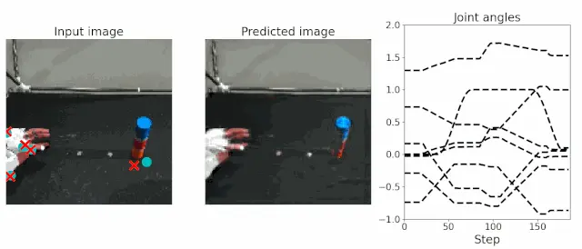

Inference
Offline inference
To verify that SARNN has been trained correctly, use the test program test.py. The argument filename should be the path of the trained weights file, and idx is the index of the data to be visualized. The input_param is a mixing coefficient that produces stable behavior against real-world noise. It mixes the sensor information at a given time with the model predictions at the previous time $t-1$ in a certain ratio and feeds it as input to the model. This process can be seen as a low-pass filter, where the predicted values from the previous time can complement the prediction of stable motion commands, even if the robot's sensor values are noisy. It is important to note that if the mixing coefficient is too small, it becomes difficult to adjust the motion based on real sensor information, and the robustness to position changes decreases.
$ cd eipl/tutorials/sarnn/
$ python3 ./bin/test.py --filename ./log/20230521_1247_41/SARNN.pth --idx 4 --input_param 1.0
images shape:(187, 128, 128, 3), min=0, max=255
joints shape:(187, 8), min=-0.8595600128173828, max=1.8292399644851685
loop_ct:0, joint:[ 0.00226304 -0.7357931 -0.28175825 1.2895856 0.7252841 0.14539993
-0.0266939 0.00422328]
loop_ct:1, joint:[ 0.00307412 -0.73363686 -0.2815826 1.2874944 0.72176594 0.1542334
-0.02719587 0.00325996]
.
.
.
$ ls output/
SARNN_20230521_1247_41_4_1.0.gif

Principal Component Analysis
In deep predictive learning, it is recommended to visualize the internal representation using Principal Component Analysis (PCA)1 to preliminarily examine the generalization performance of the trained model. By embedding motion into the internal state of the RNN and ensuring that the internal state is self-organized and structured for each learning motion, we can achieve generalization motion with a small amount of data. To verify how the sensorimotor information (images and joint angles) is represented, we use PCA to compress the internal state of the RNN into a lower dimension and visualize the elements that represent the characteristics of the data, specifically the first through third principal components.
The following code snippet demonstrates the inference and PCA process. First, the test data is fed into the model and the internal state state of the RNN at each time step is stored as a list. In the case of LSTM, the hidden state and the cell state are returned as state. For visualization and analysis purposes we use the hidden state. Next, we reshape the state from [number of data, time series length, number of state dimensions] to [number of data x time series length, number of state dimensions] to compare the internal state at each object position. Finally, we apply PCA to compress the high-dimensional state into low-dimensional information (3 dimensions), as shown in line 12. By restoring the compressed principal component pca_val to its original form [number of data, time series length, 3 dim], we can visualize the relationship between object position and internal state by assigning a unique color to each object position and plotting the points in 3D space.
| [SOURCE] test_pca_rnn.py | |
|---|---|
| |
Use the test_pca_sarnn.py program to visualize the internal state using PCA. The filename argument should be the path to the weight file.
$ cd eipl/tutorials/sarnn/
$ python3 ./bin/test_pca_sarnn.py --filename log/20230521_1247_41/SARNN.pth
$ ls output/
PCA_SARNN_20230521_1247_41.gif
The figure below shows the inference results of SARNN. Each dotted line represents the time evolution of the internal state. The color of each attractor corresponds to the object position: blue, orange, and green correspond to the teaching positions A, C, and E, while red and purple correspond to the untrained positions B and D. The self-organization of the attractors based on the object position indicates that the behavior is learned and memorized according to the object position. In particular, the attractors at the untrained positions are generated between the teaching positions, allowing the generation of interpolated movements by teaching grasping movements with different object positions multiple times.

Motion Generation
The following pseudocode describes an online motion generation method using a real robot. The robot can generate sequential motions based on sensor information by repeating steps 2-5 at a specified sampling rate.
-
Load model (line 23)
After defining the model, load the trained weights.
-
Retrieve and normalize sensor information (line 38)
Retrieve the robot's sensor information and perform the normalization process. For example, if you are using ROS, subscribe to the image and joint angles and assign them to the
raw_imageandraw_jointvariables. -
Inference (line 51)
Predict the image
y_imageand joint angley_jointfor the next time step using the normalized imagex_imgand joint anglex_joint. -
Send command (line 61)
By using the predicted joint angle
pred_jointas the robot's motor command, the robot can generate sequential motions. When using ROS, publish the joint angles to the motors to control each motor based on the motor command. -
Sleep (line 65)
Finally, insert a sleep process to adjust the timing and perform inference at the specified sampling rate. The sampling rate should be the same as that used during training data collection.
-
Harold Hotelling. Analysis of a complex of statistical variables into principal components. Journal of educational psychology, 24(6):417, 1933. ↩